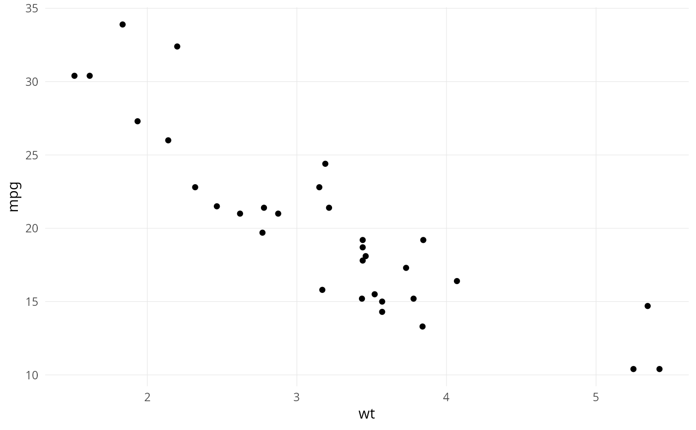

A minimalist ggplot2 theme that mirrors the look of theme_idest()
but with no font customisation, no light/dark toggles, and no
grid/axis/ticks switches. It is intended as a sensible default
theme that does not require the user to have any specific fonts
installed.
For more control over fonts, grid lines, axis lines and ticks, use
theme_idest() instead.
Usage
theme_pq_minimal(
base_size = 11,
base_family = "",
plot_title_size = 14,
axis_title_size = 11
)Value
A ggplot2::theme object.
See also
theme_idest() for a fuller, font-aware theme.
Examples
# \donttest{
library(ggplot2)
ggplot(mtcars, aes(wt, mpg)) +
geom_point() +
theme_pq_minimal()

# }